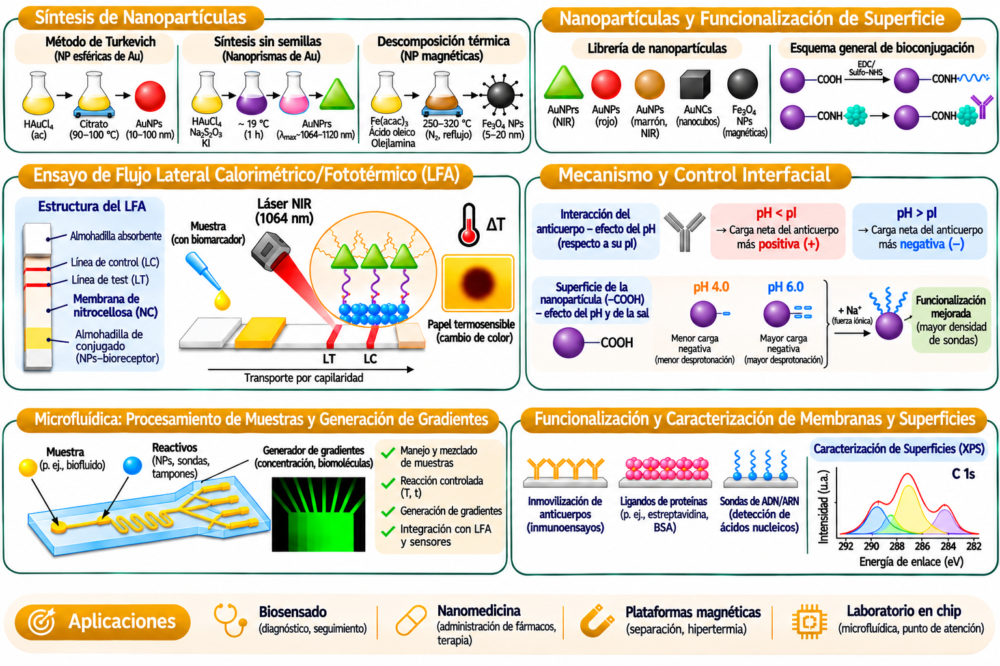

ÁREAS DE INVESTIGACIÓN
De los nanomateriales a las aplicaciones biomédicas
Síntesis, funcionalización, diagnóstico fototérmico, microfluídica y caracterización de superficies.

Making the Invisible Visible: Tiny Packages, Big Clues. Calorimetric lateral-flow detection of EVs and their miRNA cargo in liquid biopsy for disease diagnosis and monitoring.
Approaching Gold-Standard Sensitivity in a Portable and Versatile Gold Nanoprisms Thermoplasmonic Platform for Lateral Flow Detection of Biomolecules.
Small (2026) · 10.1002/smll.202514946 ↗
- 01. Cuestas Ayllón, C.; Martín Barreiro, A.; García Barrientos, Á.; Moros, M.; Grazú Bonavía, V.; Martínez de la Fuente, J. (2026). Approaching Gold-Standard Sensitivity in a Portable and Versatile Gold Nanoprisms Thermoplasmonic Platform for Lateral Flow Detection of Biomolecules. Small, 22(41), e14946.DOI ↗
- 02. Coppola, L.; Navarra, G.; Avilia, G.; Cuestas-Ayllón, C.; et al. (2026). Gold Nanoparticles Enhance Radiosensitivity in Glioblastoma Cells. ACS Omega, 11(12), 19839–19847.DOI ↗
- 03. Peranić, N.; Božičević, L.; Kalčec, N.; Altmann, K.; Hildebrandt, J.; Cuestas Ayllón, C.; et al. (2026). Surface-Driven Endocrine Activity of Nanoplastics: Polymer- and Size-Dependent Estrogen and Androgen Receptors Modulation without Steroidogenesis Perturbation. Particle and Fibre Toxicology, 23, 40.DOI ↗
- 04. Domínguez, A.; Gargallo, R.; Cuestas-Ayllón, C.; et al. (2025). Modified Bis-pyrimidine Clamps for Triplex Formation and Their Use in SARS-CoV-2 Detection. ACS Omega, 10(22), 23535–23548.DOI ↗
- 05. Rubio-Camacho, M.; Cuestas-Ayllón, C.; Torres-Herrero, B.; et al. (2024). Harnessing the power of thermosensitive liposomes with gold nanoprisms and silica for controlled drug delivery in combined chemotherapy and phototherapy. RSC Advances, 14(32), 23073–23082.DOI ↗
- 06. Domínguez, A.; Gargallo, R.; Cuestas-Ayllón, C.; et al. (2024). Biophysical evaluation of antiparallel triplexes for biosensing and biomedical applications. International Journal of Biological Macromolecules, 264, 130540.DOI ↗
- 07. Rubio-Camacho, M.; Martínez-Tomé, M. J.; Cuestas-Ayllón, C.; et al. (2023). Tailoring the plasmonic properties of gold-liposome nanohybrids as a potential powerful tool for light-mediated therapies. Colloid and Interface Science Communications, 52, 100690.DOI ↗
- 08. Aviñó, A.; Cuestas-Ayllón, C.; Gutiérrez-Capitán, M.; et al. (2022). Detection of SARS-CoV-2 Virus by Triplex Enhanced Nucleic Acid Detection Assay (TENADA). International Journal of Molecular Sciences, 23(23), 15258.DOI ↗
- 09. Armenia, I.; Cuestas Ayllón, C.; Torres Herrero, B.; et al. (2022). Photonic and magnetic materials for on-demand local drug delivery. Advanced Drug Delivery Reviews, 191, 114584.DOI ↗
- 10. Martín-Gracia, B.; Martín-Barreiro, A.; Cuestas-Ayllón, C.; et al. (2020). Nanoparticle-based biosensors for detection of extracellular vesicles in liquid biopsies. Journal of Materials Chemistry B, 8, 6710–6738.DOI ↗
- 11. Jackson, E.; Ferrari, M.; Cuestas-Ayllón, C.; et al. (2015). Protein-Templated Biomimetic Silica Nanoparticles. Langmuir, 31(12), 3687–3695.DOI ↗
- 12. Cuestas-Ayllón, C.; Xiao, Q.; Glidle, A.; et al. (2013). A robust lithographic method for multiplex surface pattering. Current Analytical Chemistry, 9(1), 29–36.DOI ↗
- 13. Zarowna-Dabrowska, A.; McKenna, E. O.; Schutte, M. E.; et al.; Cuestas-Ayllón, C.; et al. (2012). Generation of primary hepatocyte microarrays by piezoelectric printing. Colloids and Surfaces B: Biointerfaces, 89, 126–132.DOI ↗
- 14. Chevalier, S.; Cuestas-Ayllón, C.; Grazú, V.; et al. (2010). Creating Biomimetic Surfaces through Covalent and Oriented Binding of Proteins. Langmuir, 26(18), 14707–14715.DOI ↗
Correo institucional: carloscuestasayllon@unizar.es ↗
Correo personal: carloscuestasayllon@gmail.com ↗
Teléfono: +34 611 885 395 ↗